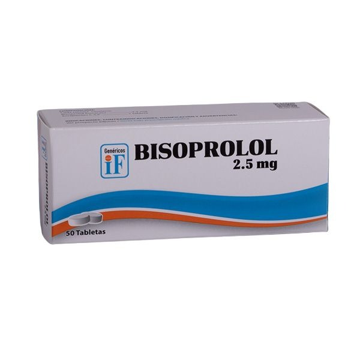
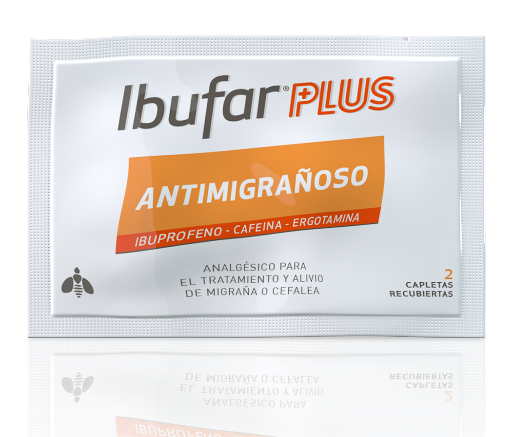

Contiene Valsartán, Amlodipino y un diurético. Se usa para tratar presión arterial alta difícil de controlar. Tomar 1 vez al día, con o sin alimentos.
Leer más
Losartán 50
Contiene Losartán potásico. Ayuda a reducir la presión y proteger los riñones. Tomar 1 tableta diaria, preferiblemente por la mañana.
Leer más
Aracure 32
Contiene Candesartán. Indicado para presión arterial alta y evitar fallos cardíacos. Tomar 1 vez al día sin interrumpir el tratamiento.
Leer más
Aracure 8
Contiene Candesartán. Se usa en hipertensión leve o en combinación. Tomar 1 tableta al día, siempre a la misma hora.
Leer más
Aracure 16
Contiene Candesartán. Ideal para presión moderada. Tomar 1 tableta diaria con agua, sin masticar.
Leer más
Aracure h32
Contiene Candesartán e hidroclorotiazida. Ayuda a eliminar líquidos y bajar la presión. Tomar 1 vez al día en la mañana.
Leer más
Aracure h16
Combinación de Candesartán e hidroclorotiazida. Se usa para hipertensión con retención de líquidos. Tomar 1 vez al día.
Leer más

Bisoprolol 2.5
Contiene Bisoprolol. Reduce la presión y frecuencia del corazón. Se toma una vez al día por la mañana.
Leer más
Bisoprolol 5
Beta bloqueador que disminuye la carga del corazón. Se toma 1 tableta diaria, siempre a la misma hora.
Leer más
Coralegre-100Mg
Contiene Metoprolol. Controla arritmias, presión y angina. Se recomienda una toma diaria sin partir la tableta.
Leer más
Betauno 5Mg
Contiene Nebivolol. Baja la presión y mejora la función de los vasos. Se toma una vez al día.
Leer más
Betauno 2.5Mg
Nebivolol en dosis baja para presión ligera o combinada. Tomar diariamente a la misma hora.
Leer más
Presnife retard 60
Contiene Nifedipino de liberación lenta. Reduce la presión y el dolor de pecho. No triturar ni masticar.
Leer más
Presnife retard 30Mg
Nifedipino en forma prolongada. Se usa para presión o angina leve. Tomar 1 vez al día sin romper la cápsula.
Leer más
Clocard 75Mg
Contiene Clopidogrel. Evita formación de coágulos. Se toma una tableta diaria, preferiblemente a la misma hora.
Leer más
Valscard 160Mg
Contiene Valsartán. Disminuye la presión y protege el corazón luego de un infarto. Tomar 1 vez al día.
Leer más
Glucovance 500 2.5 Mg
Uso: Dosis baja, usada al iniciar tratamiento o en combinación con otros medicamentos.
🔹 Función: Ayuda a controlar el azúcar en sangre en personas con diabetes tipo 2.
Leer más
Glibenclamida 5Mg
Estimula el páncreas para que libere más insulina. Se recomienda tomar antes del desayuno o primera comida.
Leer más
Jarinu 25 Mg
Ayuda a reducir el azúcar en sangre en personas con diabetes tipo 2 al mejorar la acción de la insulina. Se toma una vez al día, con o sin alimentos.
Leer más
Mediabet G 500/1000
Combinación de Metformina 500 mg y Glibenclamida 1000 mcg. Controla el azúcar en sangre en diabetes tipo 2. Tomar según indicación médica.
Leer más
Mediabet G 850/250
Metformina 850 mg + Glibenclamida 250 mcg. Usado para mejorar el control glucémico en diabetes tipo 2. Tomar con alimentos.
Leer más
Viltrevan M 50
Metformina 500 mg. Controla niveles de glucosa en sangre para diabetes tipo 2. Tomar con comidas para evitar molestias gástricas.
Leer más
Viltrevan M 850
Metformina 850 mg. Controla el azúcar en sangre, indicado para diabetes tipo 2. Usar según prescripción médica.
Leer más
Vildina 50
Sitagliptina 50 mg. Controla glucosa en sangre en diabetes tipo 2. Tomar una vez al día con o sin alimentos.
Leer más
Vildina 100
Sitagliptina 100 mg. Ayuda a controlar el azúcar en sangre. Tomar según indicaciones médicas.
Leer más
Glucoda 10
Glimepirida 10 mg. Medicamento para el control de la glucosa en sangre en pacientes con diabetes tipo 2. Se recomienda tomar antes del desayuno.
Leer más
Sumigran
Para migrañas fuertes. Tomar 1 tableta al inicio del dolor.
Leer más
Algho
Analgésico general para dolores leves o moderados.
Leer más
Garwell
Descongestionante para aliviar nariz tapada y problemas respiratorios.
Leer más
Laritox Té
Té herbal para aliviar la garganta irritada y la tos.
Leer más
Pain Max Té Antigripal
Té para aliviar síntomas gripales, fiebre y malestar general.
Leer más
Pain Max Antigripal
Pastillas para aliviar la gripe, fiebre y dolores leves.
Leer más
Tabcin Día
Medicamento antigripal para uso diurno, reduce fiebre y congestión.
Leer más
Winasorb Ultra
Jarabe que alivia dolores de cabeza intensos y fiebre rápidamente.
Leer más
Winasorb Gripe Multisíntomas
Jarabe para aliviar fiebre, dolor y congestión de la gripe.
Leer más
Winasorb Congestión
Jarabe para descongestionar nariz tapada y aliviar presión sinusal.
Leer más
Gelnorex Vita
Multivitamínico en pastilla con gelatina para recuperación general.
Leer más
Vinalard
es una vitamina liposoluble que se disuelve en la grasa y resulta esencial para el organismo dado que es un antioxidante que ayuda a proteger los ácidos grasos..
Leer más
Ponstan
Analgésico y antiinflamatorio para dolores musculares y articulares.
Leer más
Dorival
Alivia cólicos menstruales y dolores leves. Tabletas fáciles de tomar.
Leer más
Descongel Gripe
Antigripal con descongestionante para aliviar síntomas respiratorios.
Leer más
Chemitusin
Jarabe para aliviar la tos seca y reducir irritación.
Leer más
Cortax
Antiinflamatorio para aliviar dolor y reducir inflamaciones.
Leer más
Cecitro
Antialérgico para síntomas de alergia, como estornudos y picazón.
Leer más
Broncochem Té
Té para aliviar bronquitis, tos y problemas respiratorios leves.
Leer más
Alerplus
Antialérgico en cápsulas para reducir síntomas alérgicos.
Leer más
Antifludes Forte
Antigripal fuerte para síntomas severos de gripe y resfriado.
Leer más
Antifludes te
está indicado en el tratamiento de la gripe. Actúa contra el virus causante de la gripe (virus influenza tipo A), alivia los síntomas que la acompañan como fiebre, dolor muscular, dolor de cabeza, estornudos y escurrimiento nasal.
Leer más
Sinedol Cood
Analgésico con codeína para dolores intensos. Uso con precaución.
Leer más
Suprofen Cold
Antigripal con ibuprofeno para aliviar dolor y fiebre.
Leer más
Sinedol Ultra
Analgésico potente para dolores severos y fiebre alta.
Leer más
Bienaliv
Antigripal para síntomas leves y recuperación rápida.
Leer más

Ibufar Plus
Combinación de ibuprofeno y paracetamol para dolor y fiebre.